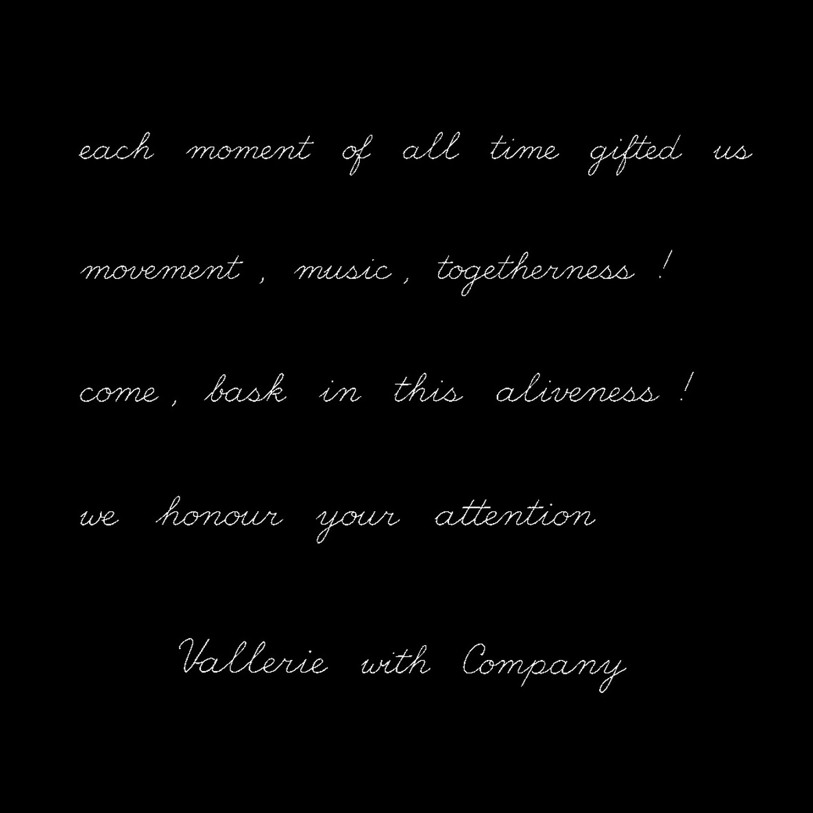

amor fati
Vallerie with Company
Live immersion in sound, movement, and togetherness.
Fri 28 Nov
20:00
Venue Name



The artists
- Vallerievoice
- Namemovement
- Namemovement
- Namemovement
- Nameviolin
- Namecello
- Namepercussion
- Namelight
- Namesound

amor fati
- Date
- 28 NovemberFriday · 2026
- Time
- 20:00doors 19:15
- Place
- Venue NameStreet 1, Stockholm
- Tickets
- 350 krlimited seating
Come, bask
Tickets through Kickstarter